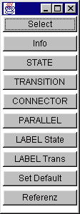
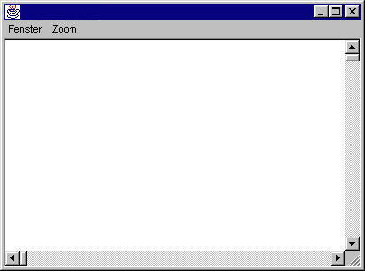
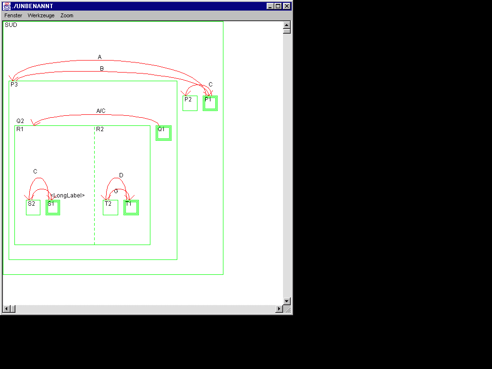
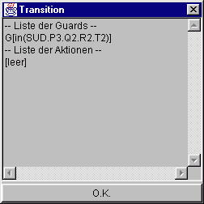

Der Editor
Neue Abstrakte Syntax
Komponenten


Zeichenfunktionen
- SELECT - Auswahl eines beliebigen Objekts
- INFO - Informationen zu langen Labels und Referenz-Zustaenden
- STATE - Zeichnen eines Zustands
- Transition - Zeichnen einer Transition
- Connector - Zeichnen eines Connectors
- Parallel - Zeichnen eines parallelen Zustands
- Label State - Benennen eines Zustands
- Label Trans - Benennen einer Transition
- Set Default - Einen Basic-Zustand als Startzustand markieren
- Referenz - Einen Basic-Zustand als Referenz kennzeichnen
Fenster-Menue
- Loeschen - Zeichenflaeche loeschen
- Schliessen - Zeichenflaeche schliessen
Zoom-Menue
- Zoom - Darstellung der Zeichenflaeche in verschiedenen Aufloesungen
Werkzeug-Menue
- Undo - letzte Zeichenoperation zuruecksetzen
- Restore - Undo zuruecksetzen
- Objekt loeschen - Ausgewaehltes Objekt loeschen
- Block loeschen - Ausgewaehlten Zustand mit allen enthaltenen Komponenten loeschen
- kopieren - Objekt kopieren
- verschieben - Objekt verschieben
- Subchart speichern - Ausgewaehlten Zustand als Statechart speichern
Beispiele
Zeichenfenster

Anzeigefenster fuer lange Transitionsbeschriftungen
